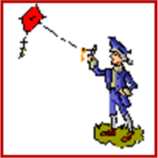

Benjamin Franklin wanted to learn
iflightning
was an electrical phenomenon, he flew
a kite in a thunderstorm.

INSTRUCTOR: How
would we fix this run-on? “Benjamin Franklin wanted to learn if lightening
was an electrical phenomenon, he flew a kit in a thunderstorm.” Let’s look at
the five different ways.